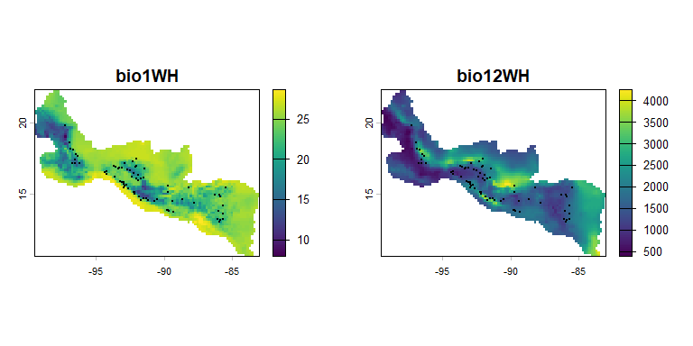
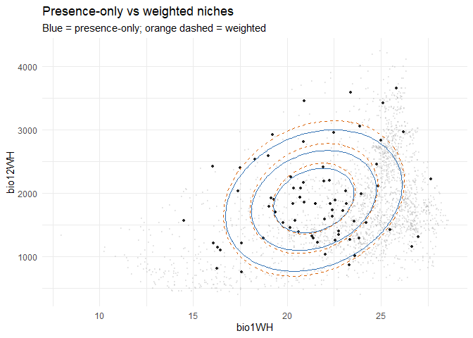

nicher estimates ecological niche models with ellipsoidal environmental responses under the M hypothesis. It includes symmetric Gaussian models, background-weighted models, and non-symmetric skew-normal and skew-t models for niches with asymmetric or heavy-tailed environmental responses.
Installation
You can install the development version of nicher from GitHub with:
# install.packages("devtools")
devtools::install_github("alrobles/nicher")Quick start
nicher ships with a small cropped raster stack and occurrence records for the Emerald-bellied Hummingbird (Abeillia abeillei). This example reads those files, fits two baseline niche models, and overlays their iso-suitability contours in environmental space.
Load the package, rasters, and occurrences
library(nicher)
library(terra)
#> terra 1.9.11
library(ggplot2)
stack_path <- system.file("extdata", "stack_1_12_crop.rds",
package = "nicher")
env_rasters <- readRDS(stack_path)
data(example_occ_df, package = "nicher")
env_rasters
#> class : SpatRaster
#> size : 70, 99, 2 (nrow, ncol, nlyr)
#> resolution : 0.1666667, 0.1666667 (x, y)
#> extent : -99.5, -83, 10.66667, 22.33333 (xmin, xmax, ymin, ymax)
#> coord. ref. : lon/lat WGS 84 (EPSG:4326)
#> source(s) : memory
#> names : bio1WH, bio12WH
#> min values : 7.985291, 399
#> max values : 28.588655, 4249
head(example_occ_df)
#> species lon lat
#> 1 Abeillia abeillei -92.933 15.733
#> 2 Abeillia abeillei -93.192 15.880
#> 3 Abeillia abeillei -92.632 15.420
#> 4 Abeillia abeillei -92.741 15.644
#> 5 Abeillia abeillei -92.229 15.158
#> 6 Abeillia abeillei -93.093 15.823Plot both environmental variables bundled in inst/extdata.
op <- par(mfrow = c(1, 2), mar = c(3, 3, 3, 5))
plot(env_rasters[[1]], main = names(env_rasters)[1])
points(example_occ_df$lon, example_occ_df$lat, pch = 20, cex = 0.45)
plot(env_rasters[[2]], main = names(env_rasters)[2])
points(example_occ_df$lon, example_occ_df$lat, pch = 20, cex = 0.45)
par(op)Extract environmental values
Occurrence records are stored as longitude/latitude coordinates. We extract raster values at those points for env_occ, then use every non-NA raster cell as the accessible background environment env_m.
occ_points <- terra::vect(example_occ_df, geom = c("lon", "lat"),
crs = "EPSG:4326")
env_occ <- terra::extract(env_rasters, occ_points, ID = FALSE)
env_occ <- stats::na.omit(as.data.frame(env_occ))
env_m <- stats::na.omit(as.data.frame(terra::values(env_rasters)))
head(env_occ)
#> bio1WH bio12WH
#> 1 20.73091 2075
#> 2 22.41057 1630
#> 3 22.25763 2203
#> 4 19.31113 1897
#> 5 23.88845 3060
#> 6 23.12673 2032
dim(env_m)
#> [1] 2371 2Fit presence-only and weighted models
The presence-only model uses occurrence environments only. The weighted model uses both occurrences (env_occ) and the accessible background environment (env_m). For a real analysis, increase num_starts and control$maxeval; these values keep the README example fast.
fit_presence <- optimize_niche(
env_occ = env_occ,
env_m = NULL,
likelihood = "presence_only",
num_starts = 3L,
seed = 42L,
control = list(maxeval = 1000L),
verbose = FALSE
)
fit_weighted <- optimize_niche(
env_occ = env_occ,
env_m = env_m,
likelihood = "ip_weighted",
num_starts = 3L,
seed = 42L,
control = list(maxeval = 150L),
verbose = FALSE, grad = "analytic",
)
fit_presence
#> -- nicher optimization result --
#> Likelihood : presence_only
#> Starts : 3 (converged: 3 )
#> Best loglik: -621.8936
#> Convergence: 1
#> eta : 1
#> Variables : bio1WH, bio12WH
fit_weighted
#> -- nicher optimization result --
#> Likelihood : ip_weighted
#> Starts : 3 (converged: 4 )
#> Best loglik: -524.229
#> Convergence: 1
#> eta : 1
#> Variables : bio1WH, bio12WHCompare the two fits
compare_nicher() reports log-likelihood, AIC, BIC, and Akaike weights. Presence-only and weighted likelihoods have different normalizing assumptions, so treat this as a quick diagnostic rather than a final model-selection decision.
suppressWarnings(
compare_nicher(
presence_only = fit_presence,
weighted = fit_weighted
)
)
#> model likelihood loglik df nobs AIC dAIC BIC
#> 1 weighted ip_weighted -524.2290 5 73 1058.458 0.0000 1069.91
#> 2 presence_only presence_only -621.8936 5 73 1253.787 195.3292 1265.24
#> dBIC weight_AIC convergence
#> 1 0.0000 1.000000e+00 1
#> 2 195.3292 3.844224e-43 1Overlay iso-suitability contours
The blue contours are the presence-only niche. The orange dashed contours are the weighted niche, regularized by the accessible background environment.
ggplot() +
geom_nicher_background(env_m, size = 0.35, alpha = 0.18) +
geom_nicher_occ(env_occ, size = 1.2, alpha = 0.85) +
geom_nicher_isosuitability(
fit_presence,
level = c(0.75, 0.5, 0.25),
colour = "#2f6fb2",
linewidth = 0.7
) +
geom_nicher_isosuitability(
fit_weighted,
level = c(0.75, 0.5, 0.25),
colour = "#d95f02",
linetype = "dashed",
linewidth = 0.7
) +
labs(
title = "Presence-only vs weighted niches",
subtitle = "Blue = presence-only; orange dashed = weighted",
x = names(env_occ)[1],
y = names(env_occ)[2]
) +
theme_minimal()
Documentation at a glance
| Article | What it covers |
|---|---|
| Package workflow | End-to-end niche fitting and projection workflow |
| Non-symmetric models | Skew-normal and skew-t likelihood families |
| Cross-validation | Penalty tuning and model selection with cv_nicher()
|